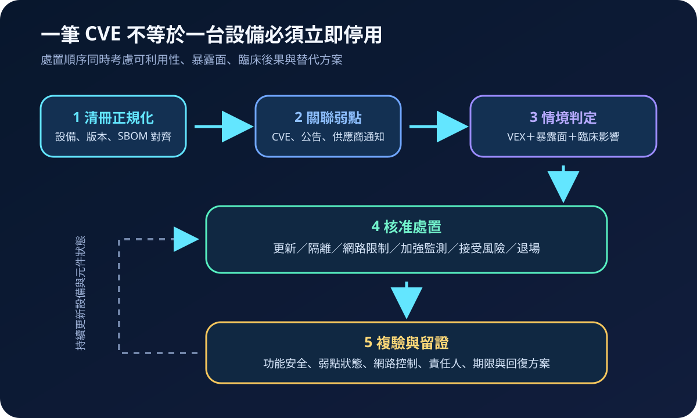
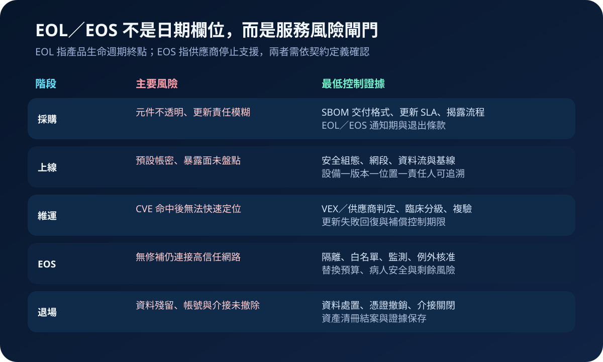

醫療資安國際觀察 · 2026-08-22
醫療設備資安如何跨越 SBOM 清冊：從弱點判定到 EOL／EOS 退場
作者：Dr. William｜醫療資訊與資安治理實務工作者
醫療設備可持續使用多年，內含軟體元件卻持續出現新弱點。治理重點不是收到一份 SBOM 就結案，而是能把元件、弱點、可利用性、臨床影響、處置證據及退場期限連成同一條決策鏈。
名詞解釋：清冊、判定與生命週期
SBOM（Software Bill of Materials）是軟體元件及版本清冊；CVE 是公開弱點識別碼；VEX 用來表達產品是否受特定弱點影響及其判定依據。補償控制是在無法立即更新時，以網路隔離、白名單、存取限制或加強監測降低風險。EOL（End of Life）與 EOS（End of Support）常分別表示生命週期終點與停止支援，但實際日期、服務內容及通知責任須以供應商契約定義為準。
國際現況與適用邊界
美國 FDA 於 2026 年 2 月發布新版醫療設備資安上市前送件指引，取代 2025 年版本，涵蓋安全設計、威脅建模、資安風險管理、互通性、更新及 SBOM 等文件考量，並說明美國《FD&C Act》第 524B 節相關建議。FDA 資安專頁於 2026 年 7 月更新，持續將上市前與上市後風險管理、弱點協調揭露及安全通訊置於設備生命週期中。NIST SSDF 則提供可整合至軟體開發生命週期的安全實務；NTIA 的 SBOM 最低元素資料則說明欄位、格式及作業要求。
法域界線：FDA 第 524B 節及上市前送件要求適用於其美國管轄範圍，不能直接寫成台灣醫院的法定義務。台灣醫療機構可把相關文件當作採購問題與治理參考，實際法規、醫材管理、通報及變更程序仍依台灣主管機關公告、契約與院內風險評估確認。
規劃：先把資料與責任接起來
範圍應從高病人安全影響、可連網及難以替代的設備開始，建立設備型號、軟體版本、所在網段、臨床用途、供應商、SBOM 版本、EOL／EOS、責任人與維護窗口。角色至少涵蓋醫工、臨床、資訊、資安、採購、法遵及供應商。驗收指標可包含 SBOM 覆蓋率、設備與元件匹配率、高風險弱點完成情境判定時間、逾期補償控制、更新成功率及 EOS 設備退場計畫覆蓋率。

實作：由一類高影響設備完成閉環
- 正規化資料：統一設備識別、元件名稱、版本格式與供應商別名，保留 SBOM 產生時間及來源。
- 關聯情資：比對 CVE、供應商公告與 VEX，不因名稱相似就直接判定受影響。
- 分級決策：共同評估網路暴露、可利用條件、病人安全、更新停機需求及替代能力。
- 執行控制：依序評估更新、組態調整、分段隔離、白名單、監測或限期接受風險；每項例外均指定期限與核准層級。
- 複驗留證：驗證設備功能、介接、弱點狀態、控制有效性與回復方案，再更新清冊。
風險：資料存在不代表可以決策
常見失敗包括 SBOM 格式不一致、清冊未連回實際部署版本、VEX 結論沒有證據日期、修補時忽略醫材功能驗證，以及 EOS 後仍讓設備留在高信任網路。供應商無法立即提供修補時，補償控制必須有臨床影響評估、監測條件、到期日與退場預算，避免臨時措施永久化。

可執行清單
- 設備清冊是否能追到實際型號、軟體版本、位置、用途、責任人與網段？
- 採購契約是否約定 SBOM 格式、更新頻率、弱點通知、修補責任及 EOL／EOS 通知期？
- CVE 命中後，是否記錄 VEX 或供應商判定、暴露面、臨床影響與證據日期？
- 無法更新的設備是否有可驗證、會到期的補償控制與退場路徑？
- 更新後是否複驗設備功能、資料介接、安全控制與失敗回復？
來源
- U.S. FDA｜Cybersecurity in Medical Devices: Quality Management System Considerations and Content of Premarket Submissions（發布／更新：2026-02-03；查閱：2026-08-22）
- U.S. FDA｜Cybersecurity（更新：2026-07-06；查閱：2026-08-22）
- NIST SP 800-218｜Secure Software Development Framework (SSDF) Version 1.1（發布：2022-02；查閱：2026-08-22）
- NTIA｜The Minimum Elements for a Software Bill of Materials（發布：2021-07-12；查閱：2026-08-22）
內容說明
本文依健康台灣深耕計畫相關治理內容整理，並參考美國官方醫療設備、軟體安全與 SBOM 資料，提出台灣醫療機構可採用的規劃與驗收框架；不取代主管機關正式公告、法律意見、醫材變更程序或個別醫院風險評估。